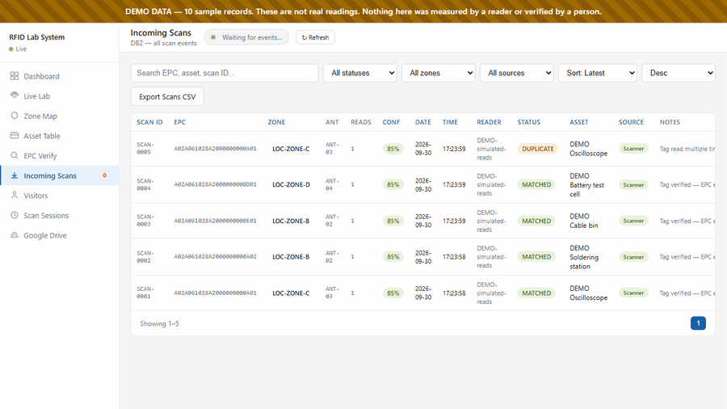
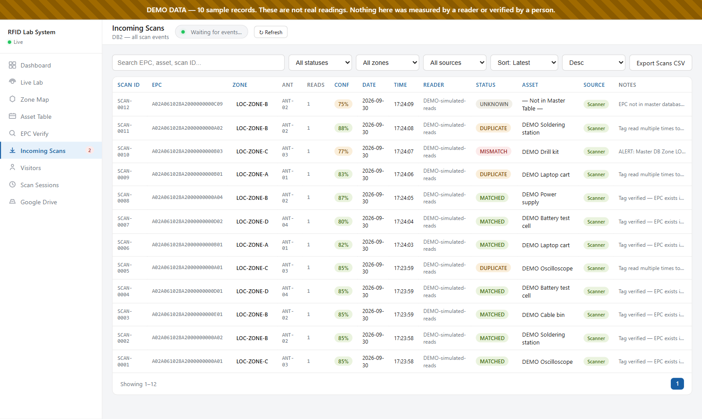

RFID for Lab and Supply-Chain Tracking
Turning radio-tag reads into records people can act on, tested first on the lab's own equipment and on naloxone-kit tracking.
- Active
- 2024–present
- RFID
- Auto-ID
- Asset tracking
- Healthcare supply chains
- Digital twins

In plain English
Radio-frequency identification (RFID) uses small, inexpensive tags that a reader can detect by radio, without contact or a clear line of sight. It can tell a hospital, warehouse or lab where its equipment and supplies are, but only if the stream of raw tag reads is turned into information people can use. This project, based in the RFID and Auto-ID Deployment (RAID) Laboratory that Dr. Jones directs, works on that step, using the lab's own equipment and a demonstration of naloxone-kit tracking as test cases.
The work began as RFID Technologies (2024–2025). Students brought the lab's readers, antennas, tag printers and handheld scanners back into service, wrote troubleshooting guides and operating procedures, and prototyped a checkpoint that announces when a tagged item or person passes a reader. The current team has built software that collects reads from fixed and handheld readers, matches each tag to an item record, and flags unknown tags or items seen in the wrong zone. It is now being joined to the lab's inventory system through a shared log, so a tag read updates the same record a barcode scan does.
Main points
- The working equipment includes fixed Impinj readers with antennas, Zebra handheld RFID readers and Zebra tag printers.
- Each read records the tag ID, the antenna or zone, signal strength and time, and is matched against the lab's item list.
- Unknown tags, repeat reads and items seen in the wrong zone are flagged for a person to check rather than accepted silently.
- A 2025 checkpoint prototype announced tagged equipment and people as they passed a reader, and the current software carries that idea forward.
- The RFID, inventory and energy teams share one set of item identifiers, so tag reads join the same records as barcode scans and meter data.

Papers
Teaching engineering economics with an RFID-monitored data center
Jones, E.C., Jr., & Gray, B. (2026). The engineering economics of RFID monitored data center cooling system. ASEE Annual Conference & Exposition 2026.
Students use real-time sensing of a data center's cooling as the basis for payback, net present value and sensitivity analysis.
- Presents a framework for teaching engineering economics in which RFID sensing and analytics of data-center cooling become inputs to economic decisions.
- Students apply payback period, net present value, cost–benefit and sensitivity analysis in a model they can change, exploring what-if scenarios.
- Illustrative scenarios, using assumptions adapted from a forthcoming data-center energy analysis, show cooling-energy cuts of about 10–15% and paybacks of roughly 12–18 months; the lesson is how those conclusions shift under uncertainty.
- The framework was introduced in an upper-level Energy Systems Modeling course in the spring; assessment data were still being collected when the paper was submitted.
Code and materials
People
- Erick C. Jones Jr., PhD, PEPrincipal Investigator · SEAR Lab directorin
- Syed MufidMS IE, RFID Leadin
- Sanjeev JoshiMS EM, Microgrid & RFIDin
- Eshwara SridharMS IE, RFIDin
- Saquib MohammedMS IE, RTLS RFID Team Leadin
- Syed Ajmal ShakeebMS IE, RFID Team Leadin
- Dhaval PanditRFID Technologies team (2024–25)
- Prajwal Yadav ManjunathRFID Technologies team (2024–25)
- Mahesh ChaudhariRFID Technologies team (2024)
- Vaibhav Dinesh ThapliyalRFID Technologies team (2024–25)
- Komal Santosh BobdeRFID Technologies team (2024–25)
- Nimish ShettyRFID Technologies team (2024)
- Vinay Vijay HirveRFID Technologies team (2024)
- Billy GrayAuthor, ASEE Annual Conference & Exposition 2026 2026
Fall 2026 team: names to be added from the lab personnel sheet. Profiles marked in link to LinkedIn. More past and present lab members are on the SEAR Lab team page.